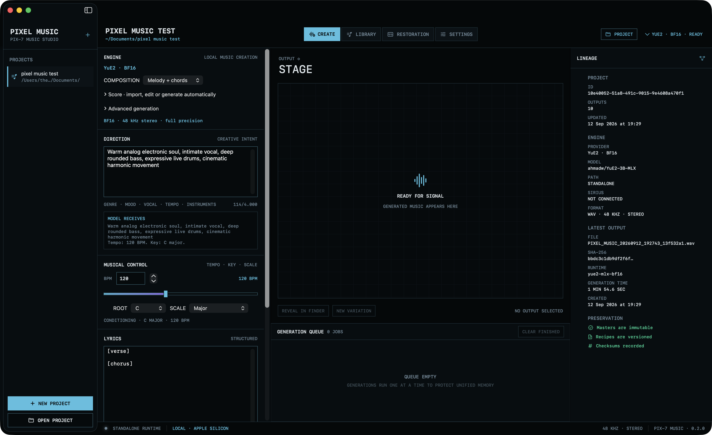

Describe the song
Write your lyrics. Set the mood, instruments and performance. Auto duration lets the composition find its ending, within YuE2’s six-minute limit.
A focused place to turn lyrics and musical ideas into songs. Generate with YuE2, shape the score, and keep every take on your own machine.
Step inside the studio ↓
An actual YuE2 take, loaded in the library. Audio, settings and creative history stay together.
Write your lyrics. Set the mood, instruments and performance. Auto duration lets the composition find its ending, within YuE2’s six-minute limit.
Generate melody and chords, focus on melody alone, or go straight to audio. Import and edit an ABC score when you want more control.
Listen, compare and revisit. New renders preserve the original master, with saved settings, checksums, scores and audio latents.
One creation space. A library of takes. The deeper controls are there when you need them.
Guidance, seed and synthesis settings. Score editing and reuse. Re-decoding saved audio latents. All inside a standalone macOS app.

For Apple Silicon Macs running macOS 14 or later. First setup downloads approximately 7 GB of BF16 model assets and an isolated runtime. The setup installer requires uv.
The app release and source repository are private. Repository access is required to open the release link.
Open private release ↗YuE2 model weights use CC BY-NC 4.0. Model license terms apply to their use; this preview is not a commercial-use grant.